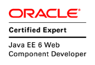
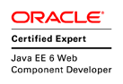

It's an abbreviation (stands for) of Web Services Interoperability.
It's a set of guidelines, best practices and test for interoperability (for heterogeneous systems).
Last version of basic profile is 2.0. However usually used one is still version 1.2.
1.5 Advanced standards (MTOM, WS-*)
MTOM (Message Transmission Optimization Mechanism) - efficient sending binary data to and from WS, usually together with XOP (XML-binary Optimized Packaging).
Annotation has threshold to define size for using MTOM/XOP (otherwise it is sent normally).
WS-Addressing - a standardized way of including message routing data within SOAP headers
WS-Security - an extension to SOAP to apply security to Web services (XML Signature and XML Encryption)
WS-ReliableMessaging - a protocol that allows SOAP messages to be reliably delivered distributed system (between applications)
And more (e.g. WS-Trust, WS-Coordination , WS-Transaction, WS-MetadataExchange)
2. WSDL & XSD
Overview
XSD Types (simple type, complex type)
XSD Sequence + Attributes + Enums
XSD Groups
WSDL structure
Namespace
2.1 Overview
WSDL - contract of SOAP WS. It defines (or includes) types, operations/methods, services, binding, etc.
XSD - definition of XML types and elements
2.2 XSD Types (simple type, complex type)
Simple type
Documentation ...
Complex type + extension
2.3 XSD Sequence + Attributes + Enums
Sequence + Attributes
Enums
2.4 XSD Groups
Definition
Usage
2.5 Namespace
WSDL
...
XSD
...
Note: xs:include is for types in same namespace, xs:import is for types from different namespace.
There are many implementations (vendors): Metro project (reference implementation), CXF, Axis, Oracle Weblogic, etc.
3.2 Exposing WS
[Server side]
Annotations for server side
Contract Last - implementation from Java
Contract First - implementation from WSDL
Custom processing - custom processing of SOAP message
3.2.1 Annotations
[Server side]
@Webservice - expose WS with embedded marshalling (done by the server)
@WebServiceProvider - expose WS, but handle service completely (from XML request to XML response)
3.2.2 Contract Last
[Server side]
Use the annotation @WebService with all desired parameters (service name, port name, methods, etc.).
@WebService(serviceName = "HelloService", portName = "HelloPort",
targetNamespace = "urn:com:asseco:aha:training:ws:v1")
public class HelloWebService implements HelloService {
@WebMethod
public String sayHello(String name) {
return String.format("Spring say: Hello %s!", name);
}
}
3.2.3 Contract First
[Server side]
Use the annotation @WebService only with definition of the generated interface.
@WebService(endpointInterface = "com.asseco.aha.training.ws.v1.HelloService")
public class HelloWebService implements HelloService {
@WebMethod
public String sayHello(String name) {
return String.format("Spring say: Hello %s!", name);
}
}
3.2.4 Custom Processing
[Server side]
Use the annotation @WebServiceProvider with all message parameters to be applied for.
@javax.xml.ws.ServiceMode(value = javax.xml.ws.Service.Mode.MESSAGE)
@WebServiceProvider(wsdlLocation = "wsdl/foo.wsdl",
serviceName = "...", portName = "...", targetNamespace = "...")
public class ProviderWebService implements Provider<SOAPMessage> {
@Override
public SOAPMessage invoke(SOAPMessage request) {
...
}
Service modes:
MESSAGE - complete message
PAYLOAD - payload only
3.3 Consuming WS
[Client side]
Annotations for server side
Generated client - generated by JAX-WS RI
General client - provided by JAX-WS RI
Spring client - spring way
3.3.1 Annotations
[Client side]
@WebServiceClient - consume/call WS
3.3.1 Generated client
[Client side]
Use generated classes to create WS instance and get the port from there.
public class HelloWorldClient{
public static void main(String[] args) throws Exception {
URL url = new URL("http://localhost:8080/ws-server-as/CalculatorWebService?WSDL");
QName qname = new QName("http://ws.server.ws.training.aha.asseco.com/", "CalculatorWebServiceService");
WsTraining service = new WsTraining(url, qname);
WsTrainingPortType calc = service.getPort(WsTrainingPortType.class);
AddRequest ar = new AddRequest();
List inputs = ar.getNumber();
inputs.add(5);
inputs.add(2);
AddResponse response = calc.add(ar);
Assert.assertEquals(7, response.getResult());
}
}
3.3.2 Runtime client
[Client side]
Use Service classe to create WS instance and get the port from there.
public class HelloWorldClient{
public static void main(String[] args) throws Exception {
URL url = new URL("http://localhost:8080/ws-server-as/HelloWebService?WSDL");
QName qname = new QName("http://ws.server.ws.training.aha.asseco.com/", "HelloWebServiceService");
Service service = Service.create(url, qname);
HelloWorld hello = service.getPort(HelloWorld.class);
System.out.println(hello.sayHello("Arny"));
}
}
@HandlerChain - get access to message content (e.g. for logging, authorization, modification, etc.)
@MTOM - serve/consume bigger content as attachments (instead of encoded text)
3.4.2 Handler Chain
Handler definition:
public class WsLoggingHandler implements SOAPHandler<SOAPMessageContext> {
@Override
public boolean handleMessage(SOAPMessageContext context) {
...
}
}
XML definition:
com.asseco.aha...util.WsLoggingHandler
Usage:
@WebService(...)
@HandlerChain(file = "/handler-chain.xml")
public class CalculatorWebService implements WsTrainingPortType {
...
}
3.4.3 MTOM
Service:
@WebService
@MTOM(threshold = 1024)
public class LoremWebService {
...
}
Client:
@Test
public void testCalc() throws MalformedURLException {
URL url = new URL("http://localhost:8080/ws-server-as/CalculatorWebService?WSDL");
QName qname = new QName("http://ws.server.ws.training.aha.asseco.com/", "CalculatorWebServiceService");
Service service = Service.create(url, qname);
WsTrainingPortType calc =
service.getPort(WsTrainingPortType.class, new MTOMFeature());
...
}
3.4.4 WS-Addressing
Service:
@WebService
@Addressing(true, false) // enabled , required
public class HelloWebService {
...
}
Request:
POST http://localhost:8080/ws-server-as/HelloWebService HTTP/1.1
SOAPAction: ""
...
http://ws.server.ws.training.aha.asseco.com/HelloWebService/sayHellohttp://localhost:8080/ws-server-as/EndpointService12345
...
4. CXF
Overview
Setup
Exposing WS
Interceptors
4.1 Overview
Apache CXF is an open source services framework. CXF helps you build and develop services using frontend programming APIs,
like JAX-WS and JAX-RS. These services can speak a variety of protocols such as SOAP, XML/HTTP, RESTful HTTP, or CORBA and work over a variety of transports
such as HTTP, JMS or JBI.
Representational state transfer known as REST is a new architecture approach to create web services.
The concept is based on:
Proper usage of HTTP features
All is about (stateless) resources (URI)
URL represents resource, not an action
Easy and efficient use, but without strict
Support for multiple format - what server accepts and client prefers (e.g. XML, JSON, CSV, TXT, etc.)
8.2 Principles
Uniform interface
Resource-Based
Manipulation of Resources Through Representations
Self-descriptive Messages
Hypermedia as the Engine of Application State (HATEOAS)
Client–server - the separation of clients from servers.
Stateless - no state is hold on server-side.
Cacheable - clients can cache responses.
Layered system - clients do not know whether they are connected directly to the end server (or not).
Code on demand (optional) - servers can temporarily extend or customize the functionality of a client by the transfer of executable code (Java applets, JS, etc.).
8.3 Methods
HTTP Method
Funtion
Description
GET
Read/Select
Retrieves a resource
PUT
Update/Create
Creates or updates resource for known ID (overwrite action) - idempotent / repeatable action
POST
Create/Update/Add
Creates or updates resource for unknown ID (ID can to be predicted)- NOT idempotent
Hypermedia as the Engine of Application State (HATEOAS) represents
another network application architecture. The principle is that a client interacts with a network application entirely through hypermedia provided dynamically by application servers.
Example request:GET /book/12345 HTTP/1.1
Host: coollibrary.com
Accept: application/json
...

 
